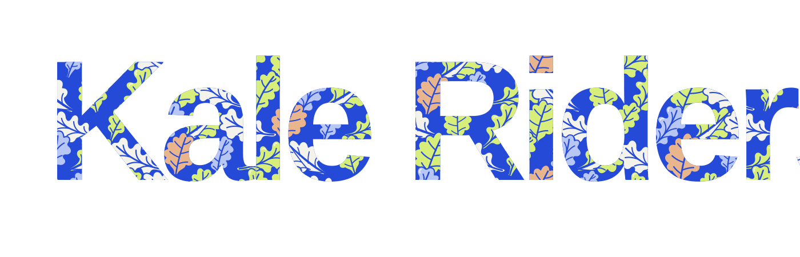
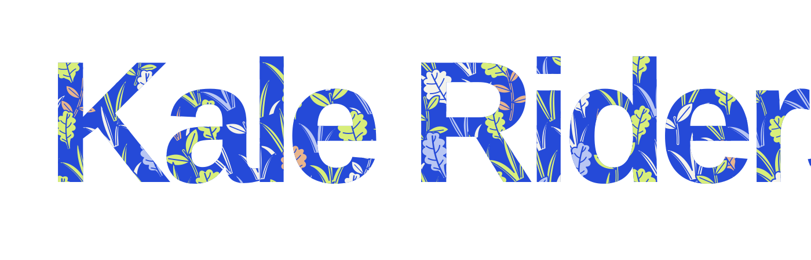
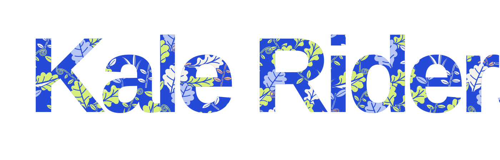

KALE RIDERS / PATTERN STUDIES
FROM OUR ROOTS
케일에서 자라는 패턴.
익숙한 블루와 라임, 같은 캐릭터와 움직임.
그 안을 채우는 모양을 케일과 풀로 바꾼 세 가지 방향입니다.
모션 준비 중 · 패턴은 바로 비교할 수 있습니다.
01 KALE SIGNATURE
케일 시그니처
둥글게 갈라진 잎 가장자리와 굵은 잎맥.
케일을 크게 반복해, 로고와 가장 직접적으로 연결합니다.

SHAPE LANGUAGE
한눈에, 케일.
꽃잎처럼 방사형으로 퍼지는 대신 줄기에서 끝으로 흐르는 실루엣을 사용했습니다. 잎 사이에 블루 여백을 남겨, 글자 안에서도 가장자리가 또렷하게 보이도록 했습니다.
큰 실루엣또렷한 잎맥브랜드 중심
02 WIND IN THE GRASS
바람의 풀숲
긴 풀잎과 새싹이 같은 방향으로 흐르도록.
작은 케일 잎을 사이사이에 넣어 가볍고 유연하게 구성했습니다.

SHAPE LANGUAGE
가볍게, 자라나는.
넓은 잎 덩어리보다 길쭉한 풀과 줄기의 흐름을 강조했습니다. 세 안 중 가장 여백이 많고, 라임 스프레이가 지나는 장면에 자연스럽게 어울립니다.
가는 풀잎같은 방향가벼운 밀도
03 KALE GARDEN
케일 가든
큰 케일, 작은 새싹, 말린 잎과 풀을 함께.
기존의 풍성한 그림 맛을 식물의 다양한 형태로 이어갑니다.

SHAPE LANGUAGE
함께, 풍성하게.
케일을 중심으로 작은 식물들을 엮었습니다. 기존 패턴의 다양한 모양과 색감을 살리되, 모든 요소가 잎·줄기·새싹으로 읽히도록 정리했습니다.
다양한 잎큰 것과 작은 것풍성한 밀도